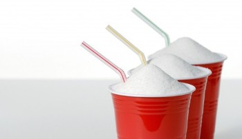

 Sugar is hidden in many of our favourite drinks. A new WHO guideline recommends adults and children reduce their daily intake of free sugars to less than 10% of their total energy intake. A further reduction to below 5% or roughly 25 grams (6 teaspoons) per day would provide additional health benefits. Sugars in fresh fruits and vegetables, and sugars naturally present in milk, because there is no reported evidence of adverse effects of consuming these sugars. Much of the sugars consumed today are “hidden” in processed foods that are not usually seen as sweets. For example, 1 tablespoon of ketchup contains around 4 grams (around 1 teaspoon) of free sugars. A single can of sugar-sweetened soda contains up to 40 grams (around 10 teaspoons) of free sugars.
The American Heart Association Recommends limiting added sugar per day to less than 24 grams for women and 36 grams for men. This is no more than 100 calories per day for most American women and no more than 150 per day for men (or about 6 teaspoons a day for women and 9 teaspoons a day for men). On average, Americans consume about 84 grams each day.
| Product Name | Sugar in grams |
| Coco – cola 20 oz bottle | 65 |
| Starbucks Iced Mocha frappuccino | 80 |
| Mtn Dew 20 oz bottle | 77 |
| Green Tea soy latte | 82 |
| Mccafe Chocolate shake (large) | 120 |
| Dunkin donuts caramel coffee coolatta ( Large / Skim Milk) | 141 |
| Minute maid 100 % apple juice | 49 |
| Tropicana 100 % orange juice | 42 |
| Simply orange | 33 |
| Blueprint lime ginger lemon agave | 37 |
| Liguiteria Mr.b Carrot, Beet, Ginger, Orange, Pineapple | 26 |
| Naked Green Machine | 53 |
| Vita coco ( 16.9 oz) | 23 |
| Zico (14 oz) | 15 |
| Vitamin water | 32 |
| Red Bull (8.4 oz) | 27 |
| Monster Energy ( 16 oz) | 50 |
| Soy Milk ( 8 oz) | 7 |
| Almond Milk (8 oz) | 7 |
| Cow Milk (8 oz) | 12 |
| Product Name | Grams of sugar in 12 ounces of Beverage |
| Blue Sky Natural Orange Soda | 44 |
| Fanta Orange | 45 |
| Coco-cola classic | 41 |
| Pepsi cola | 41 |
| A&W Root Beer | 47 |
| Schweppes Ginger Ale | 34 |
| Schweppes Tonic water | 35 |
| 100% juice | |
| Apple and Eve Naturally cranberry 100% vegetable juice | 48 |
| Low sodium V8 100% vegetable juice | 12 |
| Mott’s plus for kids Health juice Apple Grape | 48 |
| Naked Juice 100% juice Pomegranate Blueberry | 54 |
| POM Wonderful 100% pomegranate juice | 60 |
| Welch’s 100% Grape Juice | 63 |
| Sparkling Juices and sparkling water | |
| Fizz Ed pomegranate cherry | 31 |
| IZZE sparkling Grape fruit juice | 31 |
| R.W. Knudsen Lemon Lime | 28 |
| Poland spring Brand sparkling water | 0 |
| Sweetened water and Flavoured Water | |
| Berry Bot Fortified Water | 10 |
| Old Orchard FruitSense Accelerate Key Lime | 18 |
| Glacéau Vitamin Water Essential | 20 |
| Hansen's Organic Junior WaterTM Beverage | 18 |
| TalkingRain TwistTM | 20 |
| Wild Water Flippin' Fruit | 20 |
| Fruit Punch and Fruit Drinks | |
| Capri Sun Juice Drink Strawberry Kiwi | 34 |
| Hawaiian Punch Fruit Juicy Red | 45 |
| Odwalla Strawberry C-Monster | 57 |
| Snapple Fruit Punch Juice Drink | 41 |
| Lemonade | 34 |
| Minute Maid Lemonade | 42 |
| Newman's Own Lightly Sweetened Lemonade | 30 |
| Sports Drinks and Energy Drinks | |
| Capri Sun Sport Sports Drink Lemon Lime | 28 |
| Full Throttle Original | 44 |
| Gatorade G Orange | 22 |
| Sport owater | 14 |
| Odwalla Serious Focus Apple Raspberry | 60 |
| SoBe Adrenaline Rush | 51 |
| Vault | 48 |
| Iced Tea | |
| AriZona Green Tea with Ginseng and Honey | 27 |
| Steaz (Reg) Sparkling Green Tea, Raspberry | 35 |
| Homemade Iced Green Tea with 1 Tsp of Sugar | 4 |
| Homemade Iced Mint Tea, Unsweetened | 0 |
| Honest Tea Lori's Lemon Tea | 12 |
| Lipton Brisk Green | 34 |
| Snapple Earl Grey Black Tea | 12 |
| Snapple Iced Tea Peach | 35 |
| Coffee Drinks | |
| Iced Coffee with 1 Teaspoon Sugar | 4 |
| Panera Bread Frozen Drink Caramel | 62 |
| Starbucks Mint Mocha Chip Frappuccino w/ Whipped Cream | 57 |
| Smoothies and Flavored Milk | |
| Jamba Juice Mango Peach TopperTM | 63 |
| Naked Juice Protein Zone Banana Chocolate | 59 |
| Nesquik Ready-to-Drink Chocolate Milk, Reduced Fat | 48 |
| Odwalla Original Super Protein | 51 |
| Silk Chocolate Soymilk | 32 |
Adults who consume less sugars have lower body weight and, second, that increasing the amount of sugars in the diet is associated with a weight increase.
>12 g sugar/ 12 oz - Drink sparingly and infrequently
6 to 12 g sugar/ 12 oz - Better choice. But don’t overdo it
0 to 5 g sugar/ 12 oz - Best choice
WHO called on the food industry to act responsibly to ensure it reduced the fat and sugar content of foods, and to cease marketing unhealthy foods to young people.
Food industries are advised to create reduced-calorie beverages with no more than 1 gram of sugar per ounce and that are free of non-caloric sweeteners, such as aspartame, sucralose or stevia. That’s about 3 teaspoons per 12 ounces and about 50 calories. Manufacturers should also offer smaller (8-ounce) bottles of sugary drinks.
By choosing healthier beverages, individuals can reduce risks to their health.
Choose beverages with few or no calories; water is best.